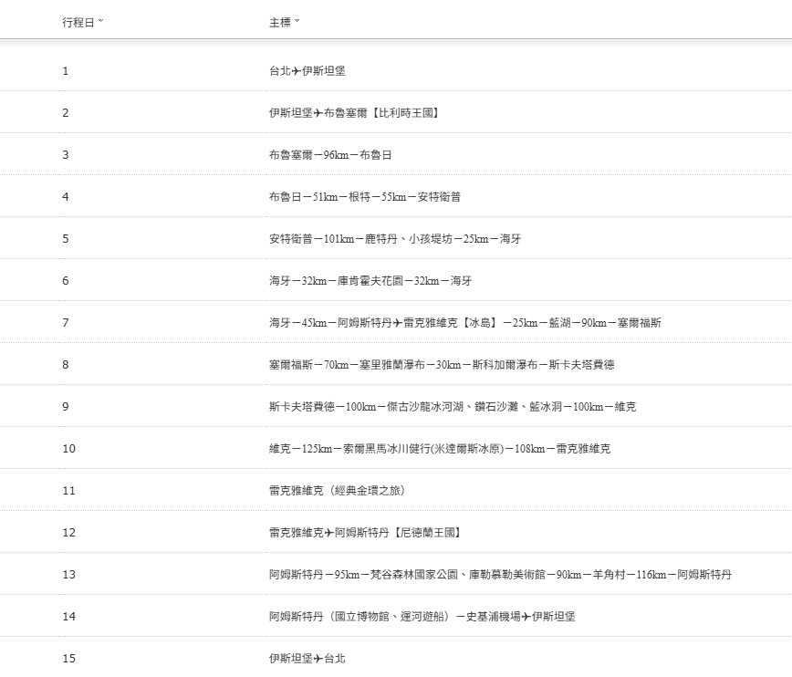

晴天旅遊世界時鐘
本地時間
TW
EN
?
使用說明
新增城市
搜尋國家或城市名稱
一鍵匯入
上傳行程截圖或貼上文字，同一國家、同時區的地點會合併成一個時鐘
調整順序
拖曳圖卡右上角的點點
移除城市
按圖卡右上角的 ×，誤刪可以按「復原」
時間試算
拖曳滑桿或按 −1h／+1h，看各地前後 24 小時內的時間
時間試算
−1h
+1h
現在
回到現在
新增城市
一鍵匯入地點
選擇圖片
可一次選多張，也可以把圖片拖到這裡，或直接貼上截圖
推薦截圖官網後台每日行程頁面，可看
範例圖
或貼上行程文字
停止
從文字匯入
完成
範例圖
官網後台「每日行程」頁面的截圖：每天一行，地名照行程順序排列，辨識最準確。

復原